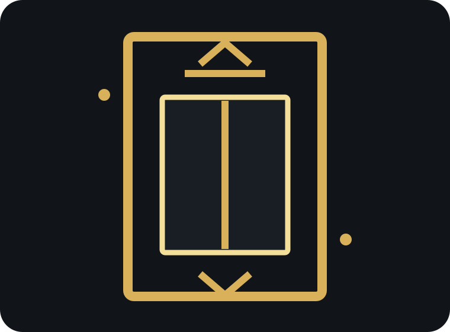

Planned maintenance
Clear capability, a focused call to action and a route into the correct response workflow.
A premium engineering concept for maintenance plans, urgent breakdowns, repairs and specialist lift support.

Only services visible in the business’s public information are used in this concept.
Clear capability, a focused call to action and a route into the correct response workflow.
Clear capability, a focused call to action and a route into the correct response workflow.
Clear capability, a focused call to action and a route into the correct response workflow.
Clear capability, a focused call to action and a route into the correct response workflow.
The official website communicates 24-hour support, broad lift expertise and four maintenance packages, but enquiries are still directed through a general contact path without lift type, operational status, site access or contract information.
A lift-specific response desk that classifies breakdowns, repairs and maintenance opportunities, records equipment and site details, and triggers CRM acknowledgements and maintenance-renewal follow-up.
Designed to reduce back-and-forth while keeping the form quick on mobile.